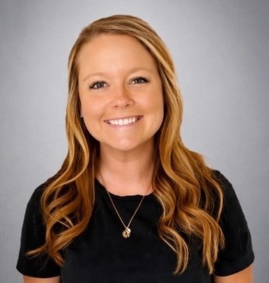
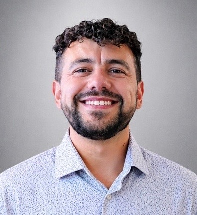
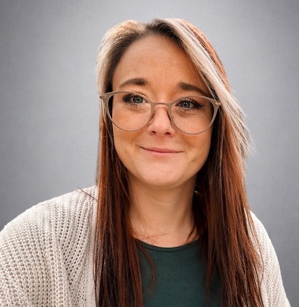
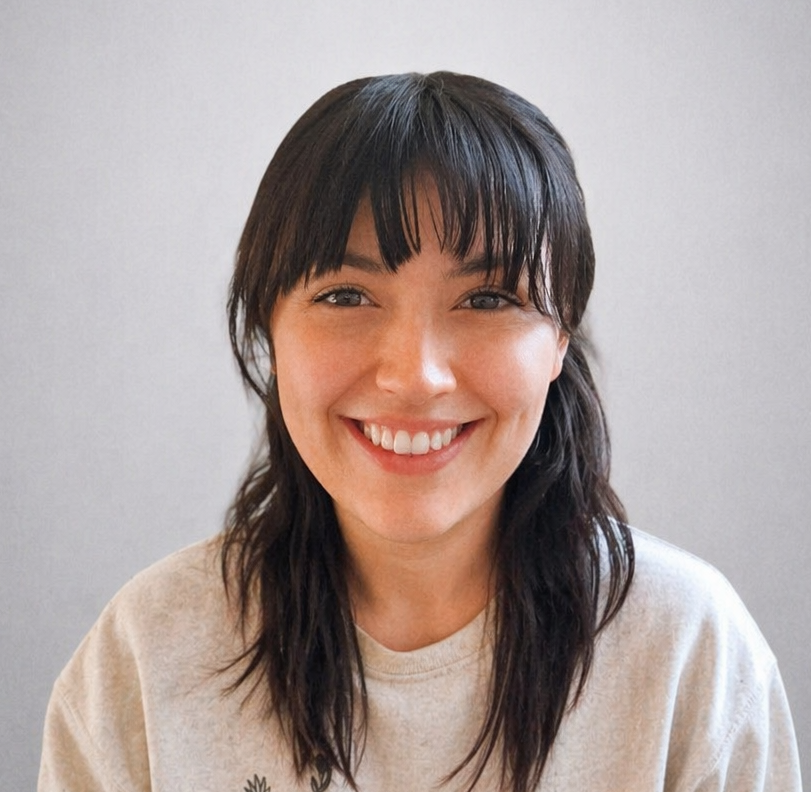
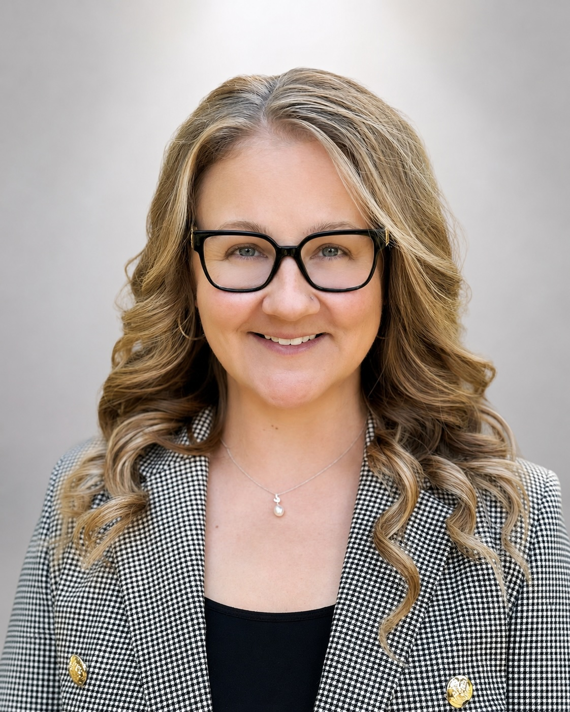

Survivor Informed Leadership
Project Worth is built by people who understand the importance of prevention, accountability, child protection reform, and survivor advocacy. Our lived experiences, professional backgrounds, and shared commitment help shape the heart behind this mission and strengthen our work to build safer systems, stronger protections, and greater awareness for children and survivors.

Kerri Gerhardy (formerly Pingel)
Founder & President
kerri@projectworthwi.orgAs a licensed Professional Counselor in Kenosha specializing in child abuse and neglect, and nonprofit specialist, Kerri leads Project Worth’s vision and mission. Her work is rooted in both lived and professional experience, giving her a unique perspective and firsthand witness to the failures and gaps within Wisconsin’s child protection systems. Kerri is dedicated to advancing child protection, systemic accountability, and earlier intervention to better safeguard children and families.
Why Project Worth: “Because kids are amazing and deserve to know their worth.”

Zac Gerhardy
Co-Founder & Behind the Scenes Software Engineer
zac@projectworthwi.orgProvides technology support and helps keep Project Worth’s systems, tools, and website work moving forward behind the scenes.
Why Project Worth: “Because strong advocacy needs steady support, practical tools, and people willing to help build what the mission needs next.”

Clarissa Losey
Vice President of Operations & Community Partnerships
clarissa@projectworthwi.orgSupports operations, partnerships, and community connection so Project Worth can grow with care, clarity, and purpose.
Why Project Worth: “Because lasting change is built through trust, teamwork, and communities willing to protect children together.”

Amy Bahr
Vice President of Survivor Advocacy & Support
amy@projectworthwi.orgAs a Licensed Professional Counselor in Wisconsin, Amy leads survivor centered support efforts, helping ensure survivors are heard, believed, and connected to meaningful resources.
Why Project Worth: “Because survivors deserve support that is compassionate, trauma informed, and rooted in dignity.”
Anna O’Connor
Director of Legal & Justice Advocacy
anna@projectworthwi.orgA licensed attorney in both Wisconsin and Illinois, Anna brings a strong legal background and a survivor focused approach to justice advocacy, helping shape responsible and effective child protection efforts.
Why Project Worth: “Because justice should be accessible, accountable, and centered on protecting children and survivors.”
Sam Goldstein
Director of National Policy & Legislative Affairs
sam@projectworthwi.orgLeads legislative strategy and policy work, including efforts connected to SB 333, “Kerri’s Law,” and broader national child protection goals.
Why Project Worth: “Because strong policy can turn survivor experience into meaningful protection for children across Wisconsin and beyond.”
Alicia Hall
Director of Reporting Reform & Institutional Accountability
alicia@projectworthwi.orgAdvocates for stronger mandated reporting systems and accountability to better protect children and support survivors.
Why Project Worth: “Because every report of abuse deserves to be taken seriously, documented clearly, and met with action.”
Sami Moore
Director of Donor Relations & Community Development
sami@projectworthwi.orgSami supports Project Worth through donor relations, development, and community connection. Her role focuses on building meaningful relationships with supporters, helping grow donor engagement, and strengthening the resources needed to move Project Worth’s mission forward. While Sami is a licensed insurance professional, Court Appointed Special Advocate, Certified Mental Health Coach, and FINRA NRF professional, her heart for this mission goes far beyond her titles. Because of her own lived experiences, she hopes to help create meaningful change so that children who wonder if anyone cared enough to do something will always know the answer is, “Yes, we do.”
Why Project Worth: “Because every child deserves to know someone cared enough to do something.”

Katie Royer
Director of Faith Institution & Clergy Accountability
katie@projectworthwi.org
Katie joined Project Worth because she believes survivors deserve protection and faith institutions must be held accountable when abuse is disclosed. Born and raised in Wisconsin and now a mother of four, this work is deeply personal to her. Katie is a survivor of child sexual abuse by a pastor’s adult son. Although the pastor and his wife were aware of the abuse, they chose to conceal it and asked that charges not be pursued. While they were never held legally accountable, they were ultimately stripped of their ministerial license through their organization. Today, her abuser is behind bars, but Katie’s experience showed her firsthand how easily those in positions of spiritual authority can avoid accountability when reporting is not required. She is passionate about advocating for clergy reform in Wisconsin to help ensure abuse is properly reported, survivors are protected, and those who enable or conceal abuse are held responsible.
Why Project Worth: “Because every survivor deserves protection, every report of abuse deserves action, and no one in a position of spiritual authority should be above accountability.”
Meagan Fleming
Director of Financial Stweardship & Treasurer &
meagan@projectworthwi.orgA fierce protective mother with experience working in banks, Meagan supports Project Worth’s financial organization, treasury responsibilities, and responsible stewardship of the mission. Her role helps keep financial systems clear, accountable, and ready to support the organization’s growth.
Why Project Worth: “Because children deserve protection, and advocacy deserves careful stewardship that keeps the mission strong.”
Addy Conrad
Co-Director of Child Advocacy & Community Response
addy@projectworthwi.orgAddy brings professional experience working as a correctional officer and behavioral technician supporting youth across Wisconsin. Drawing from both professional and personal experience, she is passionate about educating the community on youth mental health, behavioral intervention, and the realities facing at risk youth. Addy is currently pursuing her undergraduate education in Criminal Justice and Behavioral Psychology.
Why Project Worth: “Behind every behavior is a story, and every young person deserves someone willing to understand it.”
Emma Conrad
Co-Director of Child Advocacy & Survivor Outreach
emma@projectworthwi.orgEmma holds a Bachelor’s degree in Social Work with a minor in Counseling and has experience in crisis intervention, suicide prevention, and youth advocacy. As an ASSIST certified professional and CLTS Support & Service Coordinator, she is passionate about supporting children, survivors, and families through advocacy, prevention, and community support.
Why Project Worth: “Children imitate what they survive before they understand it. Advocacy begins by listening.”